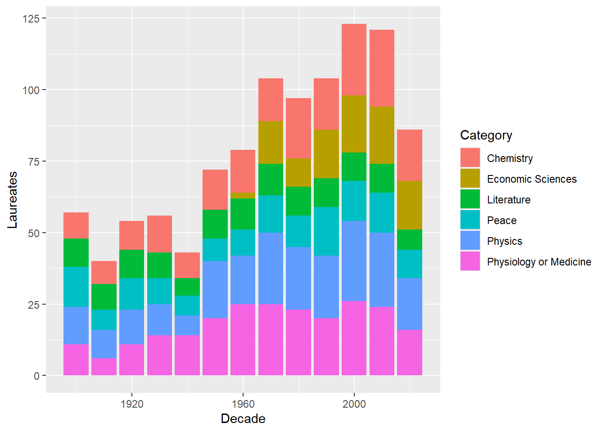
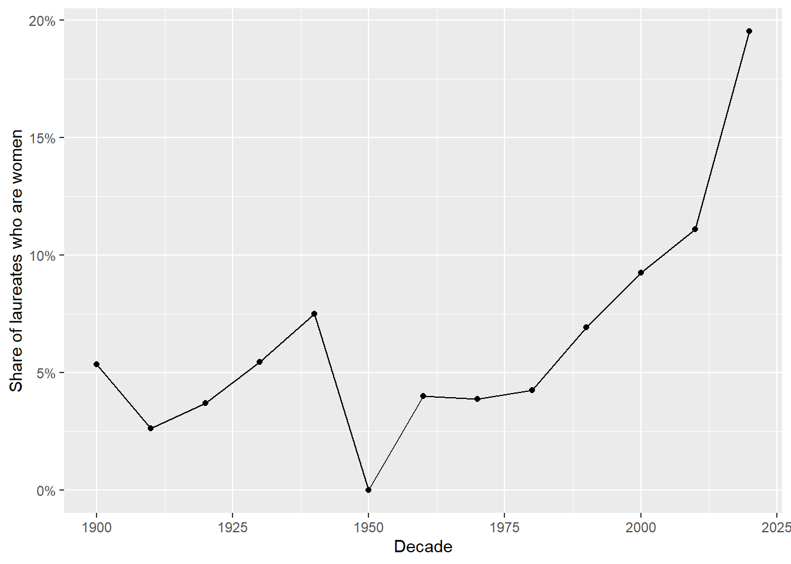
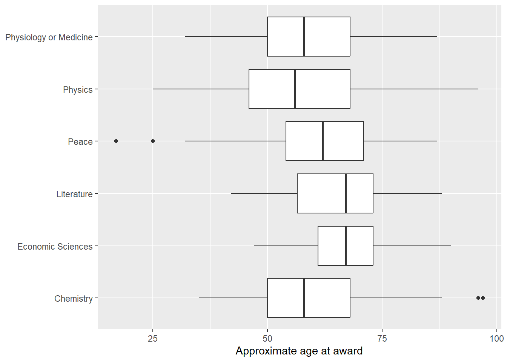

I’ll use the Nobel Prize API to retrieve laureate data in JSON format. Since the API includes birth information and a nested list of prizes for each laureate, I expect one endpoint to provide the information needed for all four questions. I think I will use jsonlite to retrieve and parse the JSON, then use hoist() and unnest_longer() to transform the nested data into two tables: one with a row per laureate and another with a row per laureate-prize combination.
I anticipate several data challenges, including laureates who have received multiple prizes, organizations such as the Red Cross that do not have birth or gender information, and missing fields in older records. Additionally, there should be differences between birth and award-time countries, which will require extra review and decision on how to handle these cases. I’ll also check for missing values before the analysis.
Code Base Deliverable
Load libraries
library(tidyverse)
── Attaching core tidyverse packages ──────────────────────── tidyverse 2.0.0 ──
✔ dplyr 1.2.1 ✔ readr 2.2.0
✔ forcats 1.0.1 ✔ stringr 1.6.0
✔ ggplot2 4.0.3 ✔ tibble 3.3.1
✔ lubridate 1.9.5 ✔ tidyr 1.3.2
✔ purrr 1.2.2
── Conflicts ────────────────────────────────────────── tidyverse_conflicts() ──
✖ dplyr::filter() masks stats::filter()
✖ dplyr::lag() masks stats::lag()
ℹ Use the conflicted package (<http://conflicted.r-lib.org/>) to force all conflicts to become errors
library(jsonlite)
Attaching package: 'jsonlite'
The following object is masked from 'package:purrr':
flatten
Data and transformations
Get the data from the API
# limit=2000 is bigger than the number of laureates, so we get everyone in one callurl <-"https://api.nobelprize.org/2.1/laureates?limit=2000&format=json"# simplifyVector = FALSE keeps the JSON as plain nested lists.# $laureates picks out just the list of laureates from the response.raw <-fromJSON(url, simplifyVector =FALSE)$laureates
Put the raw list into a tibble, one laureate per row
laureates <-tibble(x = raw) |># hoist() reaches into nested JSON and pulls out the fields like ("birth", "place", "countryNow", "en")hoist(x,id ="id",name =list("knownName", "en"), # people have knownNameorg_name =list("orgName", "en"), # organizations have orgNamegender ="gender",birth_date =list("birth", "date"),birth_country_now =list("birth", "place", "countryNow", "en"), # "now" = modern country nameprizes ="nobelPrizes") |># prizes stays nested for nowselect(-x) |># drop the leftover raw column# Organizations have no knownName, so fill with their orgNamemutate(name =coalesce(name, org_name)) |>select(-org_name)
“prizes” holds a list for each laureate, flatten so there is one row per laureate-prize
# unnest_longer() gives each prize its own row, so a multiple winner gets one per prize.prizes <- laureates |>unnest_longer(prizes) |># Pull the prize details out of the nested prize recordhoist(prizes,award_year ="awardYear",category =list("category", "en"),portion ="portion",# affiliations is a list; the 1 means "take the first affiliation".# We use countryNow so old names become modern ones.affiliation_country_now =list("affiliations", 1, "countryNow", "en")) |>mutate(award_year =as.integer(award_year), # years come in as text, so convertbirth_year =as.integer(substr(birth_date, 1, 4)), # first 4 characters of the datedecade = award_year %/%10*10) |># example 1987 to 1980select(id, name, gender, birth_country_now, birth_year, award_year, decade, category, portion, affiliation_country_now)# examine final tableglimpse(prizes)
Which category has the most laureates, and how has that changed by decade?
# Part 1: total laureates per category, biggest firstprizes |>count(category, sort =TRUE)
# A tibble: 6 × 2
category n
<chr> <int>
1 Physiology or Medicine 235
2 Physics 231
3 Chemistry 202
4 Peace 144
5 Literature 123
6 Economic Sciences 101
# Part 2: count laureates for every decade-and-category combination,# then draw stacked bars so we can see each category's share over timeprizes |>count(decade, category) |>ggplot(aes(decade, n, fill = category)) +# fill = color each category differentlygeom_col() +labs(x ="Decade", y ="Laureates", fill ="Category")

How has the share of women laureates changed over time?
prizes |>filter(!is.na(gender)) |># drop organizations (no gender recorded)group_by(decade) |># n = how many laureates that decade.# KEY STEP: gender == "female" is TRUE/FALSE for each row, and mean() of# TRUE/FALSE values is the share of TRUE, i.e. the share of women.summarise(n =n(), share_female =mean(gender =="female")) |>ggplot(aes(decade, share_female)) +geom_line() +geom_point() +scale_y_continuous(labels = scales::percent) +# show 0.1 as 10%labs(x ="Decade", y ="Share of laureates who are women")

Which country “lost” the most laureates?
# Keep only rows where both countries are known and the birth country is different from the affiliation country.lost <- prizes |>filter(!is.na(birth_country_now),!is.na(affiliation_country_now), birth_country_now != affiliation_country_now)# Which birth countries show up most often?lost |>count(birth_country_now, sort =TRUE) |>slice_head(n =10) # show only the top 10
# A tibble: 10 × 2
birth_country_now n
<chr> <int>
1 Germany 24
2 United Kingdom 24
3 Poland 19
4 Canada 15
5 France 13
6 Russia 11
7 Austria 10
8 Scotland 9
9 the Netherlands 9
10 Hungary 8
# Where did they end up? Count each birth-country to affiliation-country pairlost |>count(birth_country_now, affiliation_country_now, sort =TRUE) |>slice_head(n =10)
# A tibble: 10 × 3
birth_country_now affiliation_country_now n
<chr> <chr> <int>
1 United Kingdom USA 19
2 Canada USA 15
3 Germany USA 11
4 Poland Germany 9
5 France USA 8
6 Japan USA 7
7 Scotland United Kingdom 7
8 China USA 6
9 Poland USA 6
10 Italy USA 5
How old are laureates when they win, by category?
prizes |>filter(!is.na(birth_year)) |># organizations have no birth yearmutate(age = award_year - birth_year) |># approximate age at the awardggplot(aes(category, age)) +geom_boxplot() +# box = middle half of ages, line = median, dots = outlierscoord_flip() +# flip so the category names are easy to readlabs(x =NULL, y ="Approximate age at award")

Conclusion
To answer these questions, I pulled the laureate data from the Nobel Prize API, flattened the nested JSON into one row per laureate-prize, and checked for missing values along the way. The first graph shows that Physiology or Medicine had the most laureates overall, and that the number of laureates increased around the 1990s and 2000s before dropping slightly in recent years, with Chemistry and Medicine growing in those decades. The second graph shows that women laureates are on an upward trend but still make up only about 20% of winners. The United Kingdom and Germany “lost” the most laureates, each with 24 born there but affiliated with another country when they won, and the most common destination was the USA. The last box plot shows that the approximate age at award is concentrated between 50 and 75, though the median age and outliers vary by category, with the Peace prize having outliers younger than 25. Some limits to keep in mind: the API gives only the award year, so ages are approximate, and Literature and Peace laureates almost never have a recorded affiliation, so the “lost laureates” answer covers mainly science and economics winners.
AI Assistance
Anthropic. (2026). Claude Sonnet 5.5 [Generative AI chat]. https://claude.ai/
Claude was used as a supplemental tool to help choose an API endpoint, understand the structure of the JSON response, and develop the R code for tidying the nested data, analysis, and visualization. It also helped add explanatory comments to the code. I reviewed and ran the code, checked the output, and interpreted the results as part of my analysis.